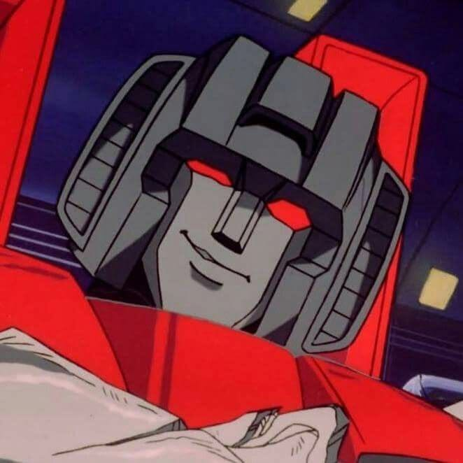
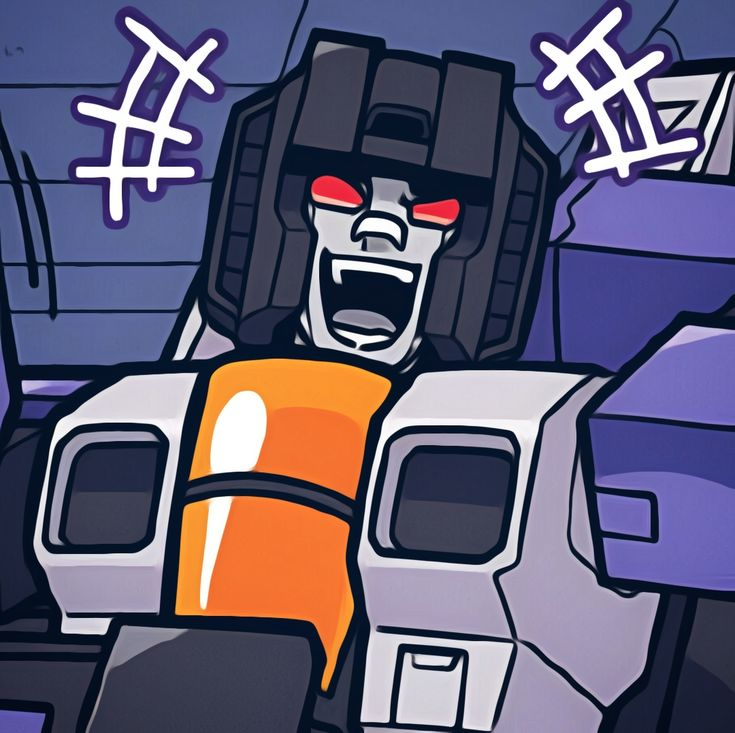
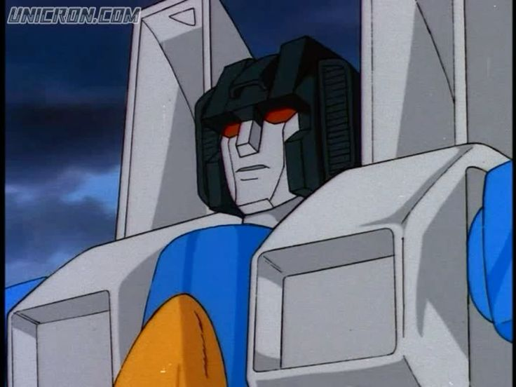
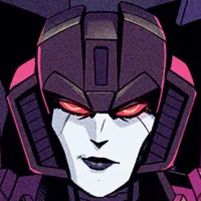
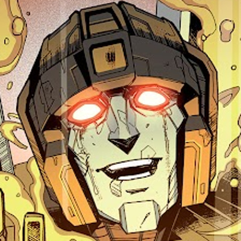

Bem-vindo ao Universo de Starscream
Explore a história, habilidades e curiosidades do comandante aéreo dos Decepticons.
Dossiê Tático

Starscream representa perigo máximo mesmo sob supervisão de superiores — especialmente sob supervisão de superiores. Histórico de 47 tentativas de traição documentadas contra Megatron.
História de Starscream
Starscream é um dos personagens mais icônicos do universo Transformers. Ele é conhecido por sua ambição e desejo de poder, frequentemente tentando usurpar o comando dos Decepticons de Megatron.Sua história é marcada por traições, batalhas épicas e uma busca incessante por reconhecimento.
Conheça Sua Historia
Starscream é o comandante aéreo não confiável de Megatron, com o fato de que ele está sempre tentando usurpar a liderança de Megatron. A deslealdade de Starscream tornou-se cada vez mais óbvia para Megatron conforme a série progredia. Starscream era anteriormente um cientista e explorador, trabalhando com o futuro Autobot Skyfire, durante a Era de Ouro de Cybertron, pouco antes da guerra Autobot/Decepticon re-irromper. Após o desaparecimento de Skyfire quando os dois estavam explorando uma Terra pré-histórica, Starscream retornou a Cybertron e logo abandonou suas atividades científicas, tornando-se um guerreiro no exército Decepticon de Megatron enquanto a guerra civil explodia, considerando-a "muito mais emocionante". Starscream frequentou a Academia de Guerra de Cybertron, mencionada no episódio "Problema de um Prime"..
Temporada 1 Atuando como segundo em comando das tropas de elite que Megatron levou consigo a bordo da Nemesis, Starscream estava entre os Transformers presos em estase na Terra por quatro milhões de anos após os Decepticons atacarem a nave Autobot, Ark, fazendo-a cair no planeta. Quando o computador da nave, Teletraan I, foi reativado por uma explosão vulcânica em 1984, os Decepticons foram os primeiros a serem reativados e foram restaurados com novos modos alternativos terrestres. Antes de partir, Starscream atirou na Ark como um pequeno gesto de despedida, causando um pequeno tremor que jogou Optimus Prime no caminho do feixe de reconstrução, permitindo que os Autobots fossem restaurados e a guerra continuasse na Terra. Enquanto a guerra continuava, o velho amigo de Starscream, Skyfire, foi encontrado congelado no Círculo Polar Ártico, e Megatron notou o quão preocupado Starscream estava em ver Skyfire resgatado. Starscream até assumiu o controle do processo de renascimento e despertou com sucesso seu velho amigo. Foi essa amizade que inicialmente levou Skyfire a se juntar aos Decepticons, mas quando este último se recusou a machucar humanos, Megatron e Starscream expressaram seu desgosto. Pouco tempo depois, vários Autobots vieram investigar a atividade Decepticon e foram posteriormente capturados; Starscream se preparou para executá-los e Starscream se ofereceu para perdoar Skyfire se este aceitasse o primeiro tiro. Skyfire, desiludido com os novos modos guerreiros de seu velho amigo, juntou-se aos Autobots, e Starscream não pensou mais nele. Durante os eventos cataclísmicos que se seguiram quando Megatron transportou Cybertron para a órbita da Terra, Starscream tentou usar o aliado humano dos Decepticons, Doutor Arkeville, para seus próprios propósitos. Starscream o forçou a levá-lo para seu laboratório secreto, onde desestabilizou o gerador exponencial de Arkeville, que, quando atingisse massa crítica, destruiria a Terra. Starscream então fugiu com Arkeville para Cybertron, onde Starscream pretendia coletar a energia liberada na destruição da Terra. Quando Optimus Prime e Megatron foram forçados a trabalhar juntos para impedir o plano de Starscream, Starscream retornou à Terra para investigar por que o gerador não havia explodido. Enquanto isso, para remover a ameaça do gerador, Prime o carregou no cano da arma de Megatron e o disparou para o espaço — explodindo Starscream para fora do ar no processo, fazendo-o cair na Terra e nas garras de um Megatron vingativo.
Temporada 2
Starscream foi uma figura proeminente na maioria dos esquemas de Megatron no ano seguinte, mas também fez várias outras jogadas por poder — unindo-se aos Triple Changers Blitzwing e Astrotrain para trair Megatron, apenas para ser traído; enganando o paranóico Autobot, Red Alert, para permitir que ele adquirisse a arma Negavator dos Autobots; incapacitando a robô Nightbird de Megatron para manter sua própria posição de poder; ficando bêbado com energon e muito mais. Ironicamente, dada sua natureza invariavelmente traiçoeira, ele foi o primeiro a farejar a traição do Rei Nergill quando os Decepticons se uniram aos moradores subaquáticos da Sub-Atlântica para dominar o mundo, chegando até a salvar Megatron de ser baleado por Nergill. Geralmente, quase toda vez que (o virtualmente indestrutível) Megatron sofria o menor dano em uma batalha, Starscream alegava que Megatron havia "caído" e freneticamente instava os Decepticons a segui-lo imediatamente como seu novo líder. Em 1985, Starscream foi responsável pela criação dos Combaticons ao libertar seus componentes de personalidade presos de um centro de detenção em Cybertron e instalá-los em cinco veículos da Segunda Guerra Mundial que sobraram da Batalha de Guadalcanal. Ele os transformou em formas veiculares mais modernas (por exemplo, ele fez o Vortex, o helicóptero de uma aeronave de asa fixa da Segunda Guerra Mundial que caiu). Ele pretendia que eles fossem seu próprio exército particular depois que ele foi exilado dos Decepticons por tentar trair Megatron muitas vezes. Embora os Combaticons tenham derrotado Devastator e feito Megatron abrir mão do controle dos Decepticons para Starscream usando sua forma combinada, Bruticus , eles foram derrotados por um Menasor interveniente . Megatron posteriormente fez Astrotrain realocar Starscream e seu aliado gigante Bruticus, para um asteroide no espaço profundo. Encontrando-se mais uma vez no exílio, Starscream jurou vingança. Apesar das promessas de vingança contra Megatron de suas criações, Starscream abandonou os Combaticons, culpando-os por seu fracasso em assumir o controle dos Decepticons (onde na realidade eles o ajudaram a ter sucesso). Em uma mistura de febre de cabine e tédio, ele arriscou-se a se aventurar no espaço sideral. Ironicamente, os Combaticons acabaram assumindo o controle de Cybertron exilando Shockwave no espaço profundo (onde ele encontrou Starscream) e alteraram a ponte espacial para empurrar a Terra para o sol, alcançando vingança contra Megatron, os Autobots, os Decepticons e a Terra. Starscream chegou em Cybertron e tentou recuperar sua liderança sobre suas criações, mas foi preso pelos Combaticons junto com Shockwave. A tomada de poder dos Combaticons forçou outra aliança desconfortável entre os Autobots e os Decepticons, que lutaram contra Bruticus e finalmente o derrotaram, graças a um ponto fraco revelado por Starscream em troca de Megatron não matá-lo no local.

Galeria


S E E K E R S

Starscream
Skywarp
Thundercracker
Slipstream
SunstormAparições
1984 Transformers: Geração 1 Animação
1984 Transformers (Marvel Comics) HQ
1986 Transformers: O Filme Filme
1996 Beast Wars: Transformers Animação
2002 Transformers: Armada Animação
2007 Transformers Filme
2007 Transformers: The Game Jogo
2008 Transformers: Animated Animação
2009 A Vingança dos Derrotados Filme
2010 Transformers: Prime Animação
2010 War for Cybertron Jogo
2011 O Lado Oculto da Lua Filme
2012 Fall of Cybertron Jogo
2018 Transformers: Cyberverse Animação
2022 Transformers: EarthSpark Animação
Curiosidades
- Mudança de Classe: Antes de se juntar à guerra, ele era um cientista ou um brilhante Comandante Aéreo dos Seekers, a unidade de elite de voo de Cybertron.
- Modo Alternativo: Na clássica "Geração 1" e no primeiro filme live-action de 2007, ele se transforma em um caça a jato. No live-action, o jato foi o famoso F-22 Raptor
- Já apareceu em desenhos, filmes e jogos.
- Obsessão de Liderança: Sua característica mais marcante é tramar pelas costas de Megatron para assumir o controle dos Decepticons. Apesar da traição constante, Megatron muitas vezes o mantinha por perto devido à sua grande habilidade de combate.
- É conhecido por sua inteligência e ambição.